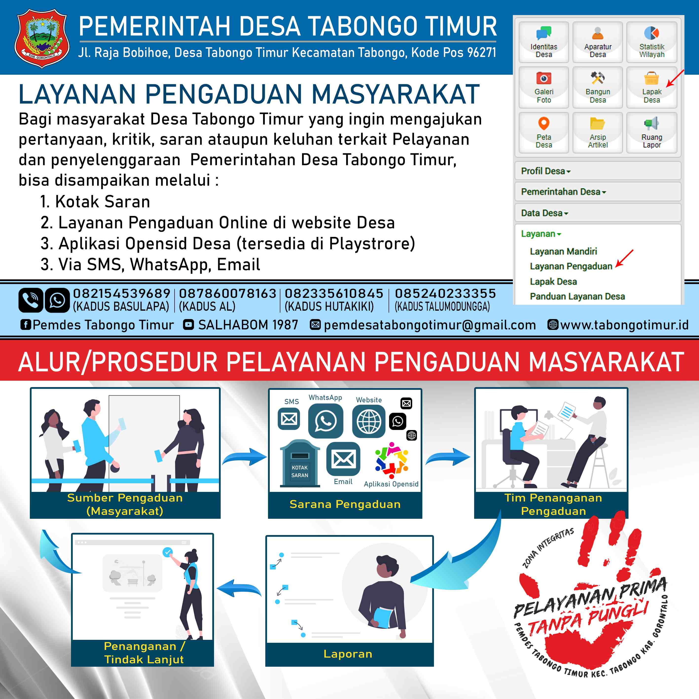
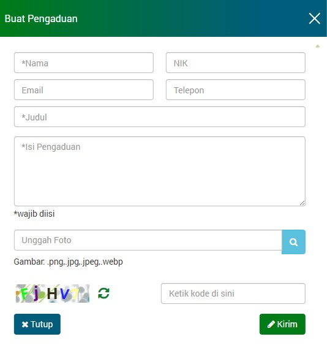

LAYANAN PENGADUAN ONLINE

Dalam rangka meningkatkan kualitas pelayanan publik yang transparan, akuntabel, dan responsif, Pemerintah Desa Tabongo Timur berupaya memberikan pelayanan semaksimal mungkin. Diantaranya dengan menyediakan fasilitas layanan pengaduan yang dapat dimanfaatkan oleh warga desa dalam memberikan masukan, kritik, saran ataupun aduan secara secara online
LAYANAN MANDIRI
LAYANAN LAINNYA
SURVEY KEPUASAN MASYARAKAT